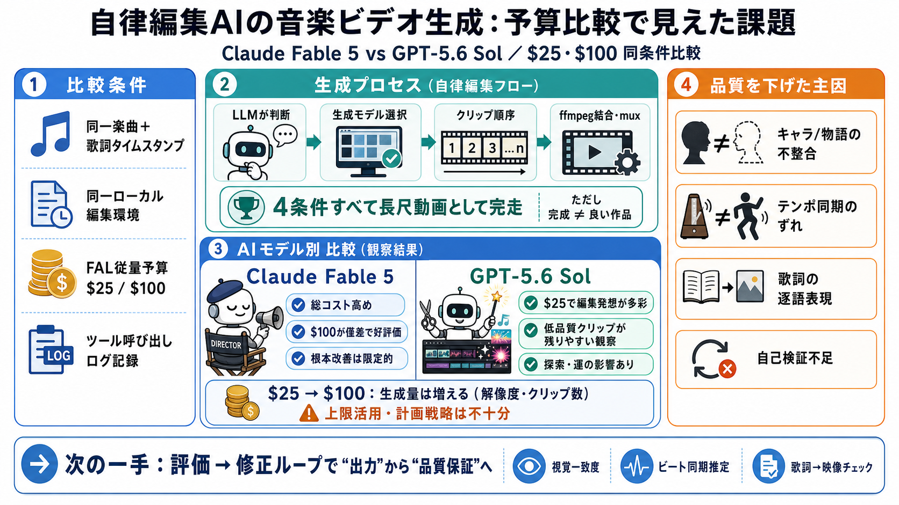

Claude Fable vs GPT for productivity
Claude Fable may be just slightly more powerful that GPT5.6 Sol, even outperforms Fable 5 on several Benchmarks, GPT-5.6…

Claude Fable may be just slightly more powerful that GPT5.6 Sol, even outperforms Fable 5 on several Benchmarks, GPT-5.6…
By using our site, you are agreeing to the collection and use of data as described in our Privacy Policy. ###### GPT-5.5…
# GPT-5.6 Sol vs Claude Fable 5: Which Frontier Model Wins for Planning and Code Review? GPT-5.6 Sol and Claude Fable 5 …
GPT-5.6 Sol vs Fable 5: I Wasn't Expecting This Edward Donner 12800 subscribers 296 likes 13543 views 10 Jul 2026 My AI …
GPT-5.6 vs Claude Fable 5: I Tested 6 Real Use Cases (Here’s the Winner) Peter Yang 100000 subscribers 961 likes 60337 v…